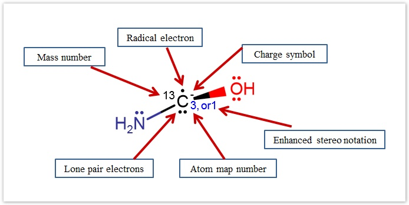
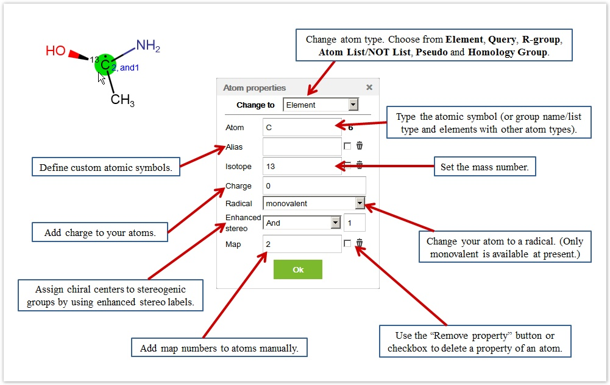
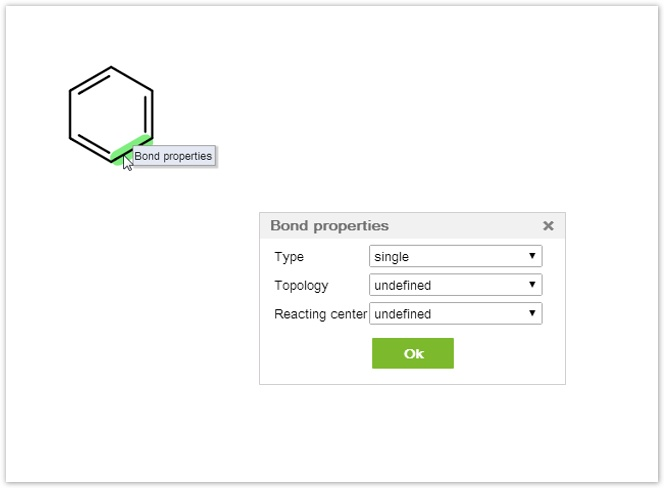

Marvin JS User's Guide
Table of Contents (Start)
Properties
Atom Properties
Currently Marvin JS supports the display of atomic charges, isotopes, monovalent radicals, enhanced stereo specifications, and atom maps as atom properties. All of these attributes can be set in the Atom properties dialog window available from the pop-up menu after a right-click on the atom.

The dialog provides options for changing atom type, setting new atomic symbols, or defining properties of atoms. You can choose from the following atom types: Element, Query , R-group , List/NOT list, Pseudo, or Homology Group . Choosing any of these types, only the relevant property fields appear on the dialog. For example, in case of a pseudo atom, there are three properties available: pseudo, charge, and enhanced stereo. Previously defined properties can be removed by clicking on the Remove property button.

-
These properties can be set for several atoms at the same time, by selecting the atoms in question and then opening the Atom properties dialog from the context menu. In this case, only those properties are editable which are permitted for every selected atom type, and the same changes will be applied to every selected atom. If one or more of the selected atoms has/have attached properties, you can delete them by using the respective Remove property buttons.
-
If you define an "Alias" for an atom, the label given in the textbox will replace the standard atomic symbol on the canvas, but the atom type remains unchanged. With the exception of enhanced stereo notations and map numbers, atom properties are not displayed when an atom alias is used; however, they preserve their previously defined values and can be modified later.
-
The enhanced stereo notations (Off, Absolute, And, Or) can be added to chiral atoms (marked with wedge bonds) individually in order to assign them to stereogenic groups. The default value is the "Off" identifier, while in case of "Or" and "And" groups a number should accompany the identifier. If you leave the number field empty, number 1 will be associated with the group identifier automatically. Learn more about enhanced stereo specifications in Marvin JS.
-
In case of hydrogen isotopes (deuterium and tritium), their specific atomic symbols can be used (D and T, respectively), or they can be displayed as 2H or 3H, too.
-
Note that atomic charges can be modified using the Increase Charge/Decrease Charge buttons on the Tools toolbar, too.
Bond Properties
You can add extra properties to the bonds of your molecules by using the Bond properties dialog window. It is available in the Bond properties context menu, which can be invoked by right clicking on a bond.

The dialog provides options for changing bond type, setting the topology (in chain, in ring) or the reacting center (center, make or break, change, make and change, not center).
In the case of the latter two properties, the undefined option is the default value.
You can also set the type of the bond from the Tools Toolbar or Keyboard Shortcuts.